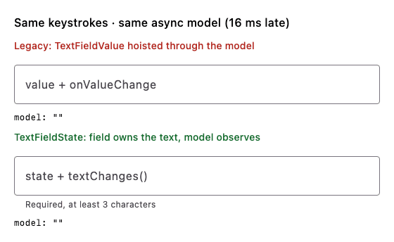

Decision record: TextFieldState support
Status: accepted · Since: the release after 1.12.1 / 1.13.0-alpha01 · Scope: additive on every channel, plus deprecations in the Compose 1.13+ artifacts
Compose is moving editable text from the value + onValueChange pair (String /
TextFieldValue, VisualTransformation) to a field-owned
TextFieldState with
InputTransformation / OutputTransformation for formatting. yakcov supports both side by side:
every TextFieldValue API keeps working, and both kinds mix in one validate(), so an app can migrate
one field or module at a time. In the Compose 1.13+ artifacts the value/onValueChange
wrappers are @Deprecated (warning level), matching Compose itself; see
Deprecation.
Why: text that round-trips through a model loses input
With value + onValueChange, the field renders whatever the model holds. If the model updates
later than the next key arrives (a store hop, a reducer on another dispatcher, a slow frame),
every late write resets the field's edit buffer to stale text. Keystrokes are lost and a mid-text
paste lands in the wrong place. A TextFieldState field owns its text on the Compose clock, and
the model only observes it. Nothing writes the model back into the field while the user types.

Both fields get the same keystroke on the same frame, every 10 ms, and feed the same model that
applies each change 16 ms late. Rendered on the JVM with Compose's desktop runtime by
SkippedInputDemoRender (regenerate with
YAKCOV_DEMO_OUT=/tmp/demo ./gradlew :library:jvmTest --tests '*SkippedInputDemoRender*' --rerun).
Measured with the same keystrokes and the same async model (each change reduced 16 ms late):
| Run | Legacy TextFieldValue hoist |
TextFieldState + textChanges() |
|---|---|---|
JVM UI test, 19 chars at 10 ms gaps (AsyncModelInputTest) |
teqikbonfx (9/19 kept) |
exact |
Android emulator, adb input text (43 chars), run 1 |
qikbrwn fjm e t laog |
exact |
| Android emulator, run 2 | the quick brop azog |
exact |
| Mid-text paste / caret edit | lands wrong (test control) | lands at the caret, caret preserved |
The demo is SkippedInputActivity in :sample (it has a model-lag slider):
adb shell am start -n com.chrisjenx.yakcov.sample/.SkippedInputActivity.
The rule this record follows throughout: the TextFieldState is the only writer of a field's
text while the user is typing. The model is downstream of it, and the only model → field write is
an explicit, one-shot re-seed (§4).
What ships
| API | Purpose |
|---|---|
TextFieldStateValidator / rememberTextFieldStateValidator |
Validator-owns-state over a TextFieldState. Same rules, members and error timing as TextFieldValueValidator. |
Modifier.onFocusCursorToEnd(state: TextFieldState, highlight) |
Caret to end (or select all) on focus, through the state's own selection. The validator has the same member. |
TextFieldState.textChanges(): Flow<String> |
The state → Model hand-off for reducer (UDF) forms. Emits text only, never caret moves. |
validationBehavior, shakeOnInvalid, onFocusLost, validationConfig(validator) |
Unchanged. They never took a value, so they already work with TextFieldState fields. |
TextFieldStateValidator extends ValueValidator<String, String>, so it mixes with
TextFieldValueValidator in one listOf(a, b).validate() and keeps isValid, isError(),
supportingText(), validate(), reset() and the validationConfig member exactly as before.
Works on every channel
TextFieldState and its material3 overloads exist on every Compose version yakcov builds
(1.12.x stable and the 1.13 pre-release line), so the new API ships on both channels. You
do not have to move to Compose 1.13 to start migrating.
1. Validator-owns-state
@Composable
fun EmailField() {
// Owns a saveable TextFieldState and observes it — no onValueChange anywhere.
val email = rememberTextFieldStateValidator(rules = listOf(Required, Email))
Column {
with(email) {
OutlinedTextField(
state = textFieldState,
label = { Text("Email") },
modifier = Modifier
.onFocusCursorToEnd()
.validationConfig(
validateOnFocusLost = true,
shakeOnInvalid = true,
showErrorOnInteraction = false, // errors on blur/submit only
),
isError = isError(),
supportingText = supportingText(),
)
}
Button(onClick = { if (listOf(email).validate()) { /* submit */ } }) { Text("Save") }
}
}
How validation observes the state. Rules read textFieldState.text through a snapshot read,
so isValid/isError()/supportingText() recompute on every edit with no onValueChange. The one
thing that needs a running observer is the move from pristine to validating on the user's first
edit. That is the step onValueChange performs today, and it is what makes
showErrorOnInteraction meaningful. observeTextChanges() does it with
snapshotFlow { state.text.toString() }. rememberTextFieldStateValidator and the
validationConfig modifier both run it while the field is composed. A validator you construct
yourself (for example as a val on a component) and use without validationConfig must run it:
LaunchedEffect(v) { v.observeTextChanges() }, or launch it from the component's scope.
Error timing is unchanged. Errors show on blur (validateOnFocusLost = true) or submit
(validate()). With showErrorOnInteraction = false they never show while a fresh field is being
typed into, and after the first blur they update live. initialValidate = true still starts
validating immediately, which a field whose starting value is already valid needs (an optional
Email, a quantity seeded "1"). A pristine field still reports isValid == false.
2. Modifiers, and who owns the behaviour
validationBehavior(isError, shakeTrigger, onFocusLost) and shakeOnInvalid(isError, trigger) are
already value-agnostic, so no TextFieldState overload is needed. The only value-coupled modifier
was onFocusCursorToEnd, which now has a TextFieldState overload that edits the selection in
place (placeCursorAtEnd() / selectAll()). There is no value to hoist and no callback to call.
Recommendation for a field wrapper (for example one AppTextField(state, rules, format, style)):
the wrapper should own these behaviours and apply the yakcov modifiers internally, rather than
asking every call site to chain them. Focus-loss validation, shake on invalid submit and
caret-to-end are properties of "a validated field", not of a screen, and putting them in one place
removes the per-call-site drift. The modifiers stay public as the building blocks, and keeping them
small is what makes them composable in a wrapper.
3. UDF forms: what does the Model hold?
The options when the field owns a TextFieldState:
| Option | Verdict |
|---|---|
a. The TextFieldState itself in the Model |
✗ It is a mutable, reference-identity holder, the same reason a Model never holds validators. copy() aliases it, == becomes identity, and persistence and time-travel break. |
b. An immutable String snapshot, kept in sync one way (state → Model) |
✓ Recommended. The reducer is unchanged in shape. |
c. An adapter that computes FieldValidationState outside the reducer |
✗ Validation moves out of reduce(), and showError gets two owners. textChanges() is the only adapter worth having: a one-liner that gets the toString()/selection detail right. |
The component (Decompose component, ViewModel, presenter) owns the TextFieldState as a val
next to its store. The Model holds the text as a String plus the field's
FieldValidationState. The reducer folds rules exactly as today.
private val amountRules: List<ValueValidatorRule<String>> = listOf(Required, Decimal)
/** Immutable: the text is a String snapshot. The TextFieldState lives on the component, not here. */
data class ExpenseModel(
val amount: String = "",
val amountState: FieldValidationState = amountRules.toFieldState("", showError = false),
val submitAttempts: Int = 0,
) {
val canSubmit: Boolean get() = listOf(amountState).hasNoErrors()
}
sealed interface ExpenseEvent {
data class AmountChanged(val text: String) : ExpenseEvent
data object AmountFocusLost : ExpenseEvent
data object Submit : ExpenseEvent
}
fun reduce(model: ExpenseModel, event: ExpenseEvent): ExpenseModel = when (event) {
// Identical in shape to the TextFieldValue hoist: fold on the text, preserve showError.
is ExpenseEvent.AmountChanged -> model.copy(
amount = event.text,
amountState = amountRules.toFieldState(event.text, model.amountState.showError),
)
ExpenseEvent.AmountFocusLost ->
model.copy(amountState = amountRules.toFieldState(model.amount, showError = true))
ExpenseEvent.Submit -> model.copy(
amountState = amountRules.toFieldState(model.amount, showError = true),
submitAttempts = model.submitAttempts + 1,
)
}
/** The component (Decompose component, ViewModel, presenter…) — NOT the Model. */
@Stable
class ExpenseComponent(scope: CoroutineScope) {
/** The field's editing buffer. A `val`, created once, never copied into the Model. */
val amount = TextFieldState()
var model by mutableStateOf(ExpenseModel())
private set
fun dispatch(event: ExpenseEvent) {
model = reduce(model, event)
}
init {
// state → model: the one-way hand-off. Text only; caret moves don't emit.
scope.launch { amount.textChanges().collect { dispatch(ExpenseEvent.AmountChanged(it)) } }
}
}
@Composable
fun ExpenseForm(component: ExpenseComponent) {
val model = component.model
OutlinedTextField(
state = component.amount,
modifier = Modifier
.onFocusCursorToEnd(state = component.amount)
.validationBehavior(
isError = model.amountState.isError,
shakeTrigger = model.submitAttempts,
onFocusLost = { component.dispatch(ExpenseEvent.AmountFocusLost) },
),
isError = model.amountState.isError,
supportingText = model.amountState.supportingText(),
)
}
Compared with today. rules.toFieldState(value.text, showError) becomes
rules.toFieldState(text, showError), and everything else (keystroke events preserve showError,
focus-loss and submit force it, hasNoErrors() for canSubmit, the submitAttempts shake counter)
carries over unchanged. The Model's field type shrinks from TextFieldValue to String, because the
caret now lives in the TextFieldState. The rules about seeding and clamping TextRange no longer
apply.
Caveats.
- The hand-off is asynchronous: the Model catches up on the next snapshot apply, before the next
frame. A click handler runs as a later event and sees the final text. If an action can fire in
the same frame as an edit, carry the text in the event:
Submit(amount = amount.text.toString()). textChanges()conflates. A burst of edits may arrive as its final text, which is all a reducer needs.- Process death: persist the Model's
String(it is the source of truth for restore) and re-seed the state from it, or userememberTextFieldState/TextFieldState.Saverfor a UI-owned state.
4. Programmatic writes (suggestion, preset, re-seed, clear)
Write the TextFieldState, never the Model. Writes travel one way: state → Model through
textChanges(). setTextAndPlaceCursorAtEnd puts the caret at the end, which replaces
TextFieldValue(text, TextRange(text.length)) helpers such as a "caret-end entry". A new
TextFieldState(text) also starts with the caret at the end.
/** A reducer-owned, one-shot write request. The version makes each request distinct. */
data class Seed(val text: String, val version: Int)
@Composable
fun ProgrammaticWrites(state: TextFieldState, suggestions: List<String>, seed: Seed?) {
// Reducer re-seed (server load, edit prefill): apply only when the version changes, so it can
// never overwrite keystrokes the Model hasn't caught up with yet.
LaunchedEffect(seed?.version) {
if (seed != null) state.setTextAndPlaceCursorAtEnd(seed.text)
}
Column {
OutlinedTextField(state = state)
// Suggestion pick / preset fill: write the state at the event's source. Caret lands at the
// end; the textChanges() collector carries the text to the Model.
suggestions.forEach { s ->
Button(onClick = { state.setTextAndPlaceCursorAtEnd(s) }) { Text(s) }
}
// Clear.
Button(onClick = { state.clearText() }) { Text("Clear") }
}
}
| Write | Where it originates | How |
|---|---|---|
| Suggestion pick, preset fill | UI event | state.setTextAndPlaceCursorAtEnd(text) in the handler |
| Clear | UI event | state.clearText() |
| Re-seed (server load, edit prefill, reset after save) | Reducer | Reducer publishes a versioned Seed(text, version) (or a one-shot effect). The UI applies it in LaunchedEffect(seed.version) |
Rejected: the model echo (LaunchedEffect(model.text) { if (state.text != model.text) state.set…(model.text) }).
It loses keystrokes. Type "a" and the Model becomes "a". Type "b" before the effect runs, and the
effect compares the state's "ab" with the Model's stale "a" and writes "a" back. A versioned seed
fires only when the reducer means to write.
With a validator, the write path decides whether it counts as user interaction:
validator.value = text: replaces the text, caret at end, not interaction. The field stays pristine, exactly like assigningTextFieldValueValidator.value. Use it for a re-seed, followed byreset()if the field should look untouched.validator.validate(text): replaces the text and shows errors.- A write straight to the state (
setTextAndPlaceCursorAtEnd,clearText,edit {}) cannot be told apart from typing, so it is interaction. That is right for a suggestion pick.
5. Transformations: raw or transformed text?
Rules, textChanges() and the Model all see TextFieldState.text:
- after the
InputTransformation. It runs on user edits (typing, paste, IME) and changes what is stored. A digit filter means the validator never sees the rejected characters. - before the
OutputTransformation. It only changes what is drawn. "12.5" displayed as "12.50" is still "12.5" to the rules. - Programmatic writes bypass the
InputTransformation.setTextAndPlaceCursorAtEnd("12a")stores "12a". Normalise a preset before writing it.
/** Input: reject anything but digits and one dot. Rules see the filtered text. */
val CurrencyInput = InputTransformation.byValue { current, proposed ->
val filtered = proposed.filter { it.isDigit() || it == '.' }
if (filtered.count { it == '.' } > 1) current else filtered
}
/** Output: display-only "12.5" → "12.50". Rules and the Model still see "12.5". */
val CurrencyDisplay = OutputTransformation {
val dot = asCharSequence().indexOf('.')
if (dot >= 0) repeat(2 - (length - dot - 1)) { insert(length, "0") }
}
@Composable
fun CurrencyField(component: ExpenseComponent) {
val model = component.model
OutlinedTextField(
state = component.amount,
inputTransformation = CurrencyInput,
outputTransformation = CurrencyDisplay,
keyboardOptions = KeyboardOptions(keyboardType = KeyboardType.Decimal),
modifier = Modifier.validationBehavior(
isError = model.amountState.isError,
shakeTrigger = model.submitAttempts,
onFocusLost = { component.dispatch(ExpenseEvent.AmountFocusLost) },
),
isError = model.amountState.isError,
supportingText = model.amountState.supportingText(),
)
}
Reshaping like currency "12.5" → "12.50". Don't pad in an InputTransformation: it rewrites
stored text on every keystroke, fights the caret, and the user can't delete the digit it keeps
re-adding. Use the InputTransformation to restrict (digits, one dot, maxLength). Use an
OutputTransformation to present (padding, grouping, a currency symbol). Write rules against the
stored, unpadded form. If the stored value itself must be canonical, normalise once on blur with a
programmatic write in the focus-lost handler.
Deprecation (Compose 1.13+)
Compose 1.13 deprecates BasicTextField(value, onValueChange, …) for both String and
TextFieldValue; 1.11 and 1.12 don't. (Checked in the bytecode: in CMP 1.13.0-beta02 and androidx
material3 1.5.0-rc01 the material3 TextField/OutlinedTextField value overloads aren't annotated
yet, but the foundation field they wrap is.) yakcov follows the same line. Only the 1.13+
artifacts deprecate the wrappers around that shape:
| Deprecated in 1.13+ | Use instead |
|---|---|
TextFieldValueValidator |
TextFieldStateValidator |
rememberTextFieldValueValidator(value: String, …) |
rememberTextFieldStateValidator(initialText = …) (IDE quick-fix via ReplaceWith) |
rememberTextFieldValueValidator(textFieldValue: MutableState<TextFieldValue>, …) |
rememberTextFieldStateValidator(textFieldState = …) |
Modifier.onFocusCursorToEnd(value, onValueChange, …) |
Modifier.onFocusCursorToEnd(state = …) |
PasswordMatches(textFieldValueField) |
PasswordMatches(stringField) with a TextFieldStateValidator |
The level is warning, so builds keep compiling while you migrate. Nothing is removed; removal
comes in a later release. Everything not tied to the deprecated field shape is untouched:
ValueValidator, the rules, GenericValueValidator, FieldValidator, FieldValidationState,
validationBehavior, shakeOnInvalid and onFocusLost.
How it's built. All channels compile one common source set, and Kotlin rejects a typealias to
kotlin.Deprecated. So those declarations carry an internal marker, @TextFieldValueApi(…). Before
1.13 it's a source-only no-op. On 1.13+, the deprecateTextFieldValueApi Gradle task compiles a
copy of each file that uses it, with the marker rewritten to @Deprecated(…). File names, JVM
facades and the ABI dump don't change.
Known limitations
- Validation state (pristine/validating/showing errors) is not saveable. This is the same as
TextFieldValueValidator.rememberTextFieldStateValidatordoes save the text. - The pristine → validating step needs the observer running (see §1). Without it, rules still evaluate live, but a fresh field won't start validating until blur or submit.
Tests
TextFieldStateValidatorTest (validator, timing, caret, transformations, textChanges),
TextFieldStateUdfTest (state → Model hand-off, programmatic writes, versioned re-seed, the
submit-counter shake) and AsyncModelInputTest (fast typing, mid-text paste and a re-seed under an
async model, each with a legacy control proving the harness detects the loss) run in full on JVM, Wasm and the iOS simulator. Android unit tests and JS
run the pure (non-UI) cases and skip the Compose UI ones, as the rest of the suite does
(@AndroidJUnitIgnore / @JSIgnore).